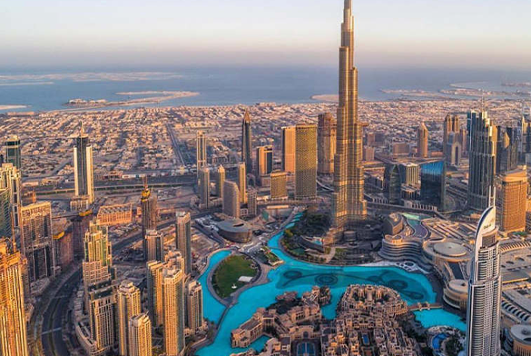

Mobile : (+237) 693 57 76 03
Mobile : (+237) 693 57 76 03
Le système éducatif du pays est bien organisé et reconnu à l'échelle internationale pour sa qualité. Étudiants internationaux qu'il s'agisse étudiants de premier cycle ou les étudiants de troisième cycle ont un large choix de cours et de programmes parmi lesquels choisir.
Etudier en Biélorussie est une opportunité d’apprendre de nouvelles langues car le biélorusse et le russe sont largement parlés dans le pays. Les étudiants internationaux doivent s'attendre à un environnement sûr et accueillant de la part des personnes qui acceptent les visiteurs à bras ouverts. La diversité culturelle est également intéressante, avec l’architecture historique classique ancienne et moderne en concurrence pour l’architecture moderne. La Biélorussie serait un bon choix pour les étudiants internationaux dont le budget est réduit, car le coût de la vie et des études sont modestes par rapport à d’autres pays d’Europe.
Diplôme secondaire ou universitaire pertinent pour les étudiants de premier cycle et de troisième cycle, respectivement Copie numérisée du passeport Frais de traitement qui varient selon l'université ou le programme Les documents suivants doivent être présentés en Biélorussie: Preuve du paiement des frais universitaires à l'aéroport Certificat médical Documents de voyage Certificat de naissance Photos format passeport: le nombre à déterminer par l'école Certificats originaux
Des visas d’étude sont remis aux étudiants étrangers venant en Biélorussie. Il y a deux façons d'obtenir un visa d'étude. À l'aéroport À leur arrivée à l’aéroport international de Minsk, les étudiants peuvent montrer leur invitation au bureau de l’immigration de l’immigration à l’établissement. Les fonctionnaires à l'aéroport apposent ensuite le visa d'étude sur le passeport international de l'étudiant. Cette option n'est choisie que par ceux qui n'ont pas d'ambassade du Bélarus dans leur pays. Les frais de visa ne sont pas plus que $ 150
La Bielorussie regorge une très forte concentration de camerounais dont la plus part y est pour les études. Cette grande communauté camerounaise se démarque des autres ressortissants par son dynamisme, solidarité, travail scolaire et encadrement des nouveaux arrivants. L’étudiant camerounais en Biélorussie à une multitude de choix en ce qui concerne la filière à choisir ; ainsi il pourra réaliser son reve de devenir ingenieur, médecin, journaliste… Les diplomes de la Biélorussie étant reconnus à l’échelle internationale et ses universités superbe équipés, l’étudiant a une assurance garantie en ce concerne la formation de qualité et l’obtention des opportunités de travail dans tous les pays d’Europe, d’Afrique, d’amérique et d’Asie. Le cout de vie étant très bas, l’étudiant n’aura aucune difficulté à se nourrir et de se vetir, soit la somme moyenne de 50 dollars par mois pour sa nutrition./p>
 Située sur la côte sud-est du golfe Persique, Dubaï est une ville mondiale et le centre des affaires du Moyen-Orient. L'Emirat de Dubaï est une terre de contrastes qui offre une grande variété de paysages, montagnes rocheuses, dunes imposantes, plages de sable fin, villages bédouins, centres commerciaux ultra modernes. Connue comme la cité des marchands, Dubaï accueille marins et commerçants sur ses rives depuis des générations, et depuis toujours, c'est un lieu de rencontre où se retrouve bédouins du désert, chasseurs de perles, marchands et pêcheurs. Cette tradition de courtoisie et d'hospitalité se perpétue aujourd'hui.
Ce sont ces contrastes qui font le charme et la personnalité de Dubaï, une société cosmopolite au style de vie international mais marqué d'une culture enracinée dans les traditions islamiques de l'Arabie. Visiter Dubaï se résume très souvent par un voyage de 3 à 5 jours ou une semaine tout au plus. Beaucoup n’y font qu’une escale et se demandent que faire à Dubai. En sortant du cliché, on se rend compte que la plus célèbre des villes des Emirats Arabes Unis peut justifier un voyage à part entière !
l y énormément d’endroits à voir ou expériences à vivre Alors, pour débuter par ce rapide résumé des incontournables
 La Belgique ou Royaume de Belgique, est un pays d'Europe ayant une frontière commune avec
les Pays-Bas au nord, l'Allemagne et le Luxembourg à l'est, la France au sud-ouest, et limitée par
la côte de la mer du Nord au nord-ouest.
La Belgique ou Royaume de Belgique, est un pays d'Europe ayant une frontière commune avec
les Pays-Bas au nord, l'Allemagne et le Luxembourg à l'est, la France au sud-ouest, et limitée par
la côte de la mer du Nord au nord-ouest.
Pays multilingue et multiculturel par excellence, partagé en 3 régions culturelles et linguistiques différentes, la Belgique attire de nombreux étudiants français car la barrière linguistique n’existe pas dans la partie francophone constituée de la Wallonie et de la ville de Bruxelles qui est bilingue.
Ce sont particulièrement reconnue. En Belgique, une attention particulière est portée à la pédagogie et aux méthodes d’apprentissage. Ainsi à l’université, des dispositifs sont prévus pour faciliter l’intégration, permettre la prévention et la remédiation dans le cas de difficultés.
Les établissements d'enseignement supérieur en Belgique offrent licences, masters et doctorats (appelés bacheliers, masters et doctorats). La Belgique dispose de deux types d'établissements d'enseignement supérieur:
Les documents suivants doivent être fournis :
L'Allemagne est un pays d'Europe de l'Ouest dont le paysage se compose de forêts, de rivières, de chaînes montagneuses et de plages sur la mer du Nord. Dotée d'une vie artistique et nocturne animée, Berlin, sa capitale, inclut la porte de Brandebourg et de nombreux sites en lien avec la Seconde Guerre mondiale. Munich est connue pour son Oktoberfest et ses bars à bières, notamment l'Hofbräuhaus qui date du XVIe siècle. Francfort, avec ses gratte-ciel, abrite la Banque centrale européenne.
Étudier à l’étranger en Allemagne est une grande chance non seulement pour les européens, mais aussi pour les étudiants partout dans le monde. Ils peuvent bénéficier d’un système éducatif de haute qualité, apprendre une nouvelle langue et acquérir l’expérience de ce pays intéressant.
Pour un camerounais, afin d’être admis comme étudiant en Allemagne, il suffit d'avoir un baccalauréat camerounais. Ce qui est d'ailleurs une exception, car pour beaucoup d'autres pays africains, les candidats doivent d'abord faire une classe préparatoire.